라즈베리파이에 GPIO 파이썬을 이용해 OLED화면 글자출력
라즈베리파이에 GPIO와 파이선을 이용해서 OLED화면에 글자 출력
안녕하세요.
이번에 소개할 내용은 라즈베리파이에 GPIO를 이용해서 OLED화면에 글자나 그림을 출력하기 입니다.
우선 준비물이 필요 합니다.
라즈베리파이 본체 OS설치와 Python설치가 끝난 상태
저의 경우는 라즈베리파이 제로를 이용해서 테스트를 했습니다.
- 준비물
- 플레이트 보드
- 0.96인치 OLED LCD스크린
- 점퍼와이어 암,수가 붙어있는걸로 합니다. 4줄필요
이렇게 준비물이 갖춰져 있는지 확인 하시고 본격적으로 OLED화면에 출력하기를 하겠습니다.

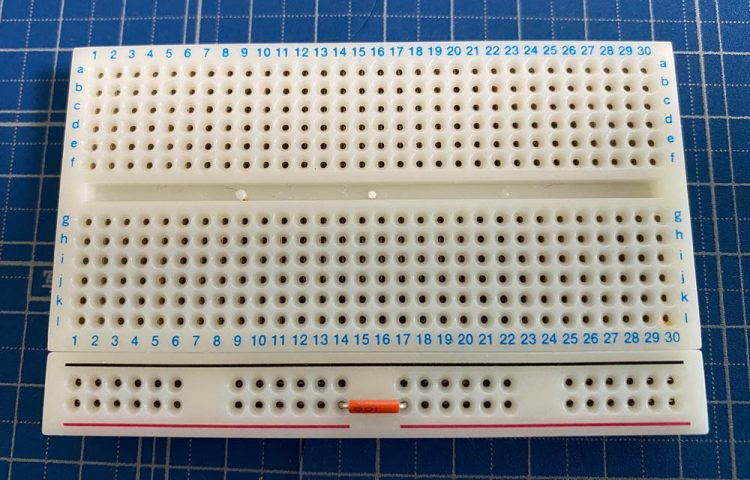
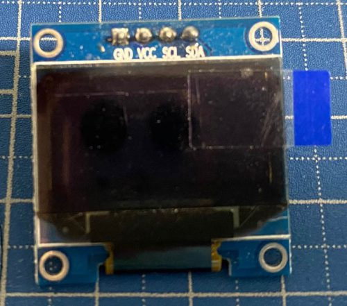
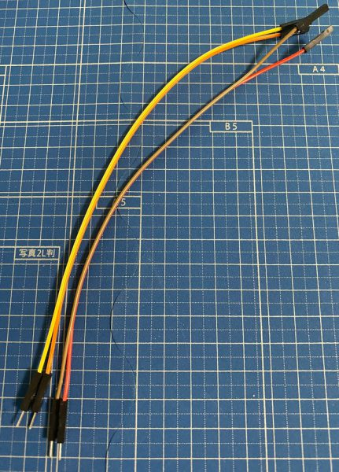
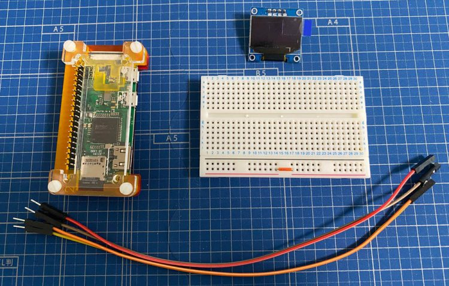
모든 구성품이 준비가 되셨으면 점퍼케이블을 라즈베리파이와 플레이트보드에 연결을 해야만 합니다만
구매하신 OLED에 따라 화면위에 적혀져 있는 핀값에 라즈베리파이의 핀번호를 연결을 해주셔야 합니다.
저의 경우는 GND, VCC, SCL, SDA라고 적혀져 있습니다.
라즈베리파이의 핀 번호에 관련해선 아래의 링크로 들어가시면 확인 하실수 있습니다.
라즈베리파이에서 GPIO를 사용하기전 알아두어야 할 사항
저의 경우는 아래의 표와같이 라즈베리파이와 OLED의 핀과 연결을 했습니다.
| OLED Pin | Pi GPIO Pin | Notes |
|---|---|---|
| VCC | 1 | 3.3V |
| SDA | 3 | I2C SCA |
| SCL | 5 | I2C SCL |
| GND | 9 | Ground |
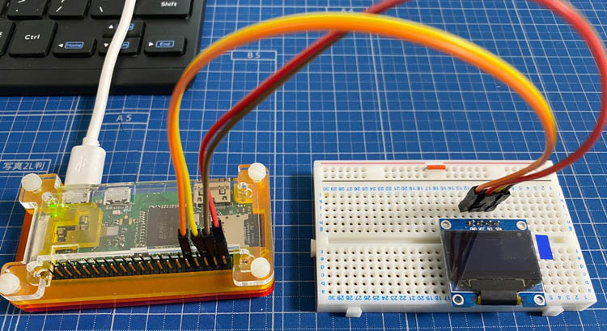
라즈베리파이를 이용해서 OLED 출력을 하기위해선 코딩을 해야만 합니다.
기본적인 코딩관련 설명은 이전의 LED점등하기 글에 올려두었으니 참고를 해주시기 바랍니다.
라즈베리파이에 GPIO와 파이선을 이용해서 LED를 켜보자 바로가기
라즈베리파이를 VNC로 접속을 하시고 터미널을 실행해 주세요.
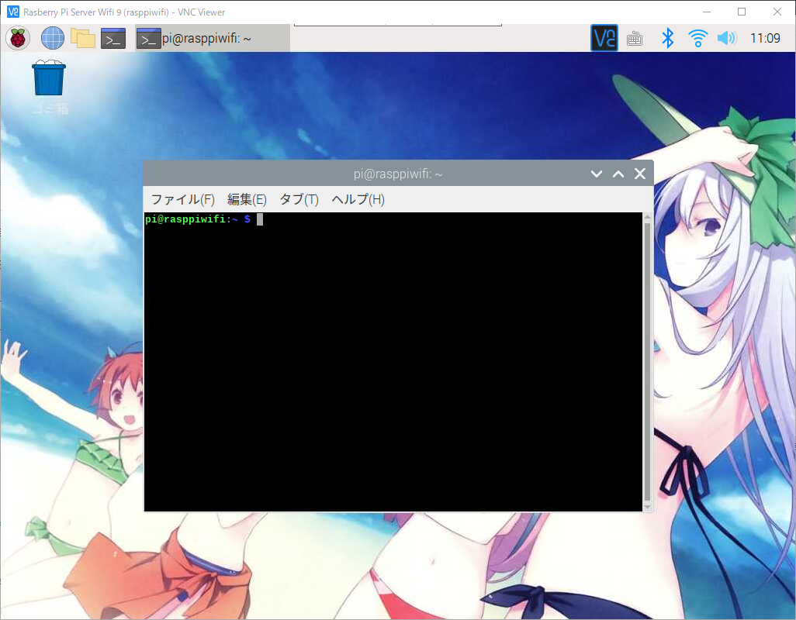
OLED를 사용하기위해선 몇가지 설정과 설치가 필요합니다.
콘솔에 아래의 명령어를 입력해 주세요.
1 | $ sudo raspi-config |
아래와 같이 설정화면이 표시가 되면 5번항목의 인터페이스 옵션설정으로 들어가시면 됩니다.
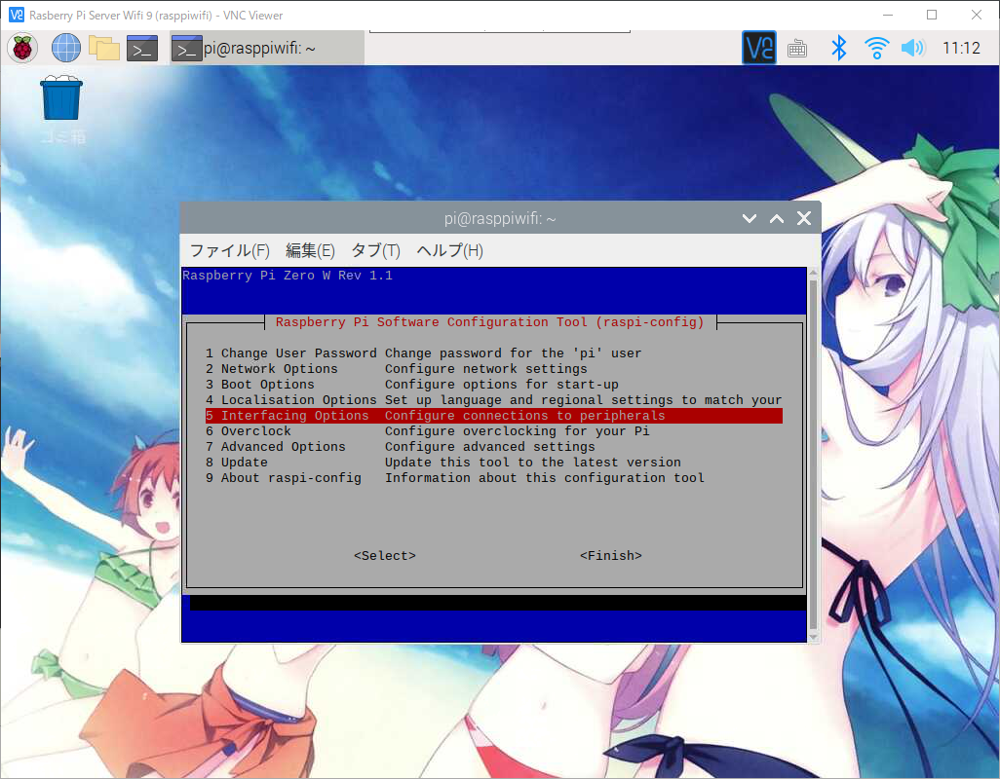
아래의 화면과 같이 P5의 I2C항목에 들어가시기 바랍니다.
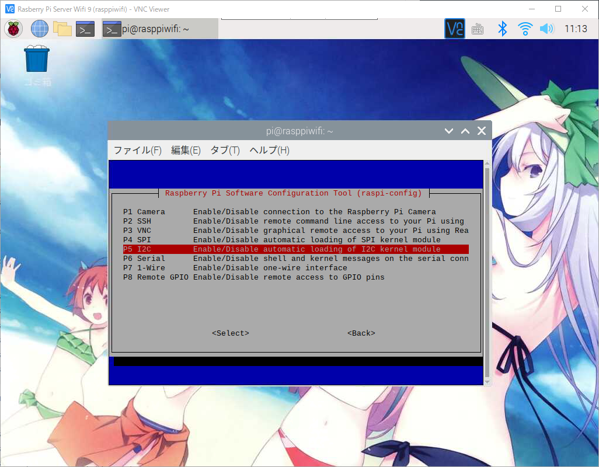
I2C를 활성화 할것인지 물어보게 됩니다. 그러면 승인을 해주시면 되겠습니다.
승인완료 화면이 나오게 되며 확인을 눌러주세요.
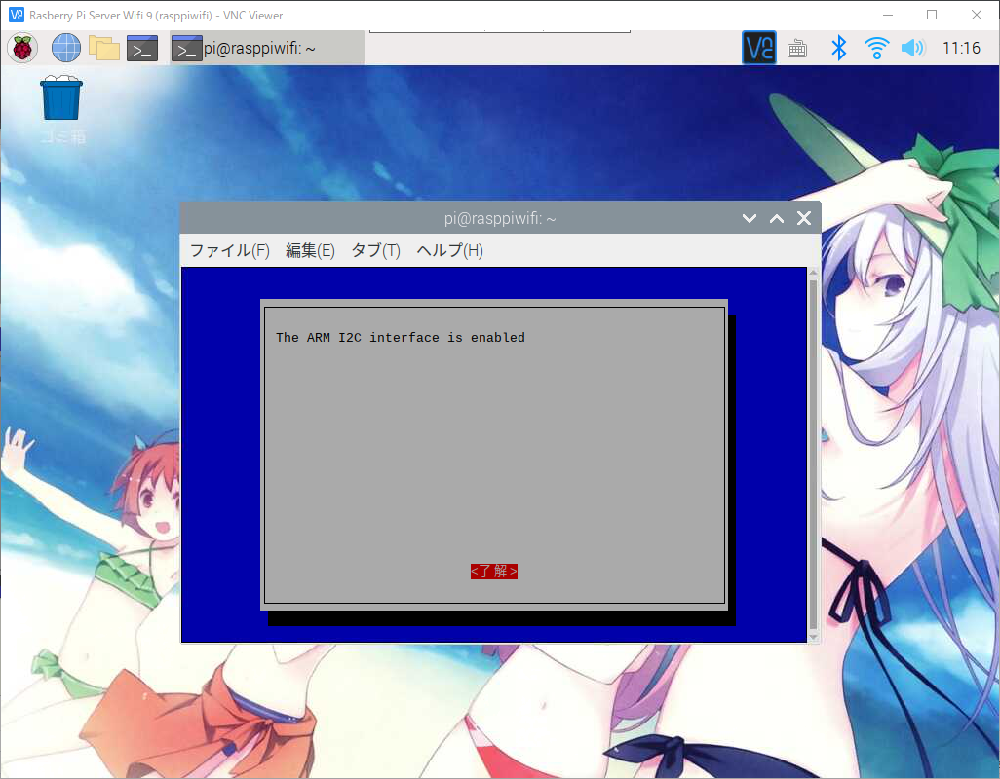
그러면 다시 처음 설정화면으로 돌아오게 되며 피니쉬를 눌러서 나오시면 되겠습니다.
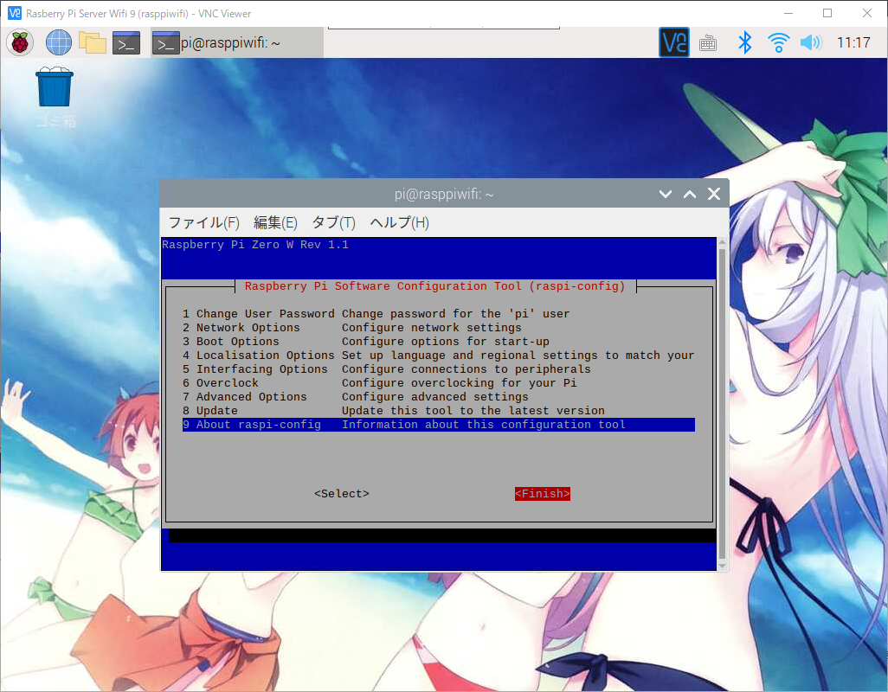
다시 콘솔창이 나오게 되면 동작에 필요한 파이선 라이브러리를 설치를 하셔야만 합니다.
우선 라즈베리파이에 파이선이 설치가 안되어 있으신 분들은 아래의 링크를 통해서 설치를 해주시기 바랍니다.
라즈베리파이에 GPIO를 이용하여 코딩을 위해 파이썬 준비
파이선 버전이 3버전대인 경우는 아래의 명령어를 차례대로 입력해서 설치를 해주시기 바랍니다.
1 | $ sudo apt install -y python3-dev |
파이선 버전이 2버전대인 경우는 아래의 명령어를 차례대로 입력해서 설치를 해주시기 바랍니다.
1 | $ sudo apt install -y python-dev |
일단 저는 3.x버전이 설치되어있는 상태이므로 3.x의 명령어를 입력해서 설치를 하겠습니다.
이렇게 설치가 모두 완료가 되었습니다.
이제 OLED 모듈주소를 찾아야 합니다.
아래의 명령어를 입력해 주세요.
1 | $ i2cdetect -y 1 |
아래와같이 3c라고 표시되는것이 OLED 스크린 장치가 정상 인식이 된것을 확인 되었습니다.
장치 인식까지 모두 되셨으면
깃허브에서 화면에 출력가능한 샘플을 받아서 실행을 해보도록 하겠습니다.
우선 깃허브를 설치를 해야하므로 아래의 명령어를 입력해 주세요.
1 | $ sudo apt install -y git |
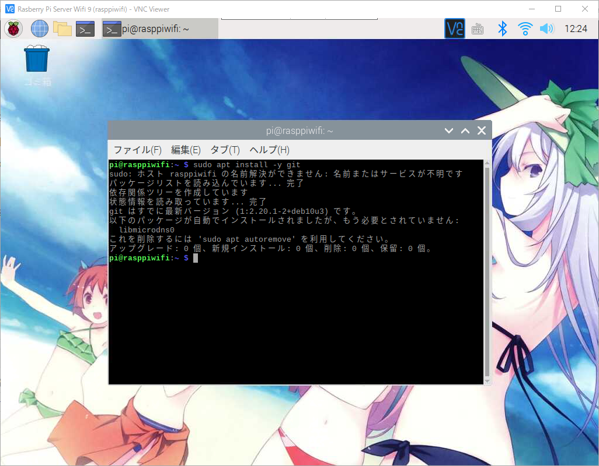
아래의 깃허브 주소에서 샘플예제를 다운로드 받겠습니다.
1 | $ git clone https://github.com/adafruit/Adafruit_Python_SSD1306.git |
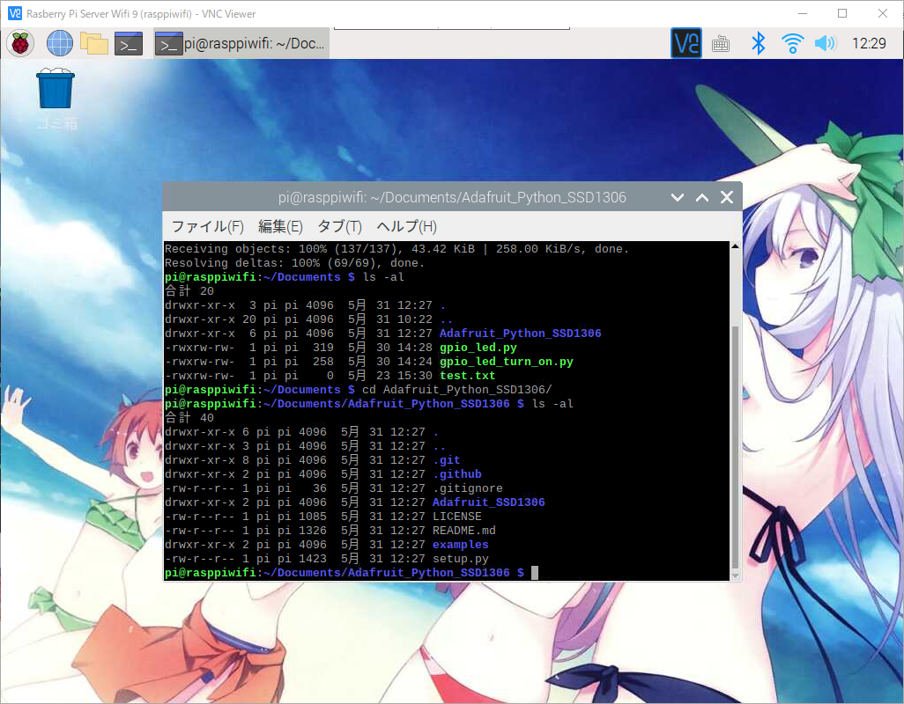
깃허브에서 샘플데이터를 받으신후 폴더안을 확인 하시면 setup.py가 있는것을 확인하실수 있습니다.
우선 setup.py을 이용해 설치를 해보도록 하겠습니다.
1 | # 파이선 2.x사용자 |
설치를 하시게 되면 설치과정이 나오게되며 성공적으로 설치가 끝난것을 확인 하실수 있습니다.
그럼 샘플폴더로 이동을 하시고 실행을 해보도록 하겠습니다.
1 | $ cd examples |
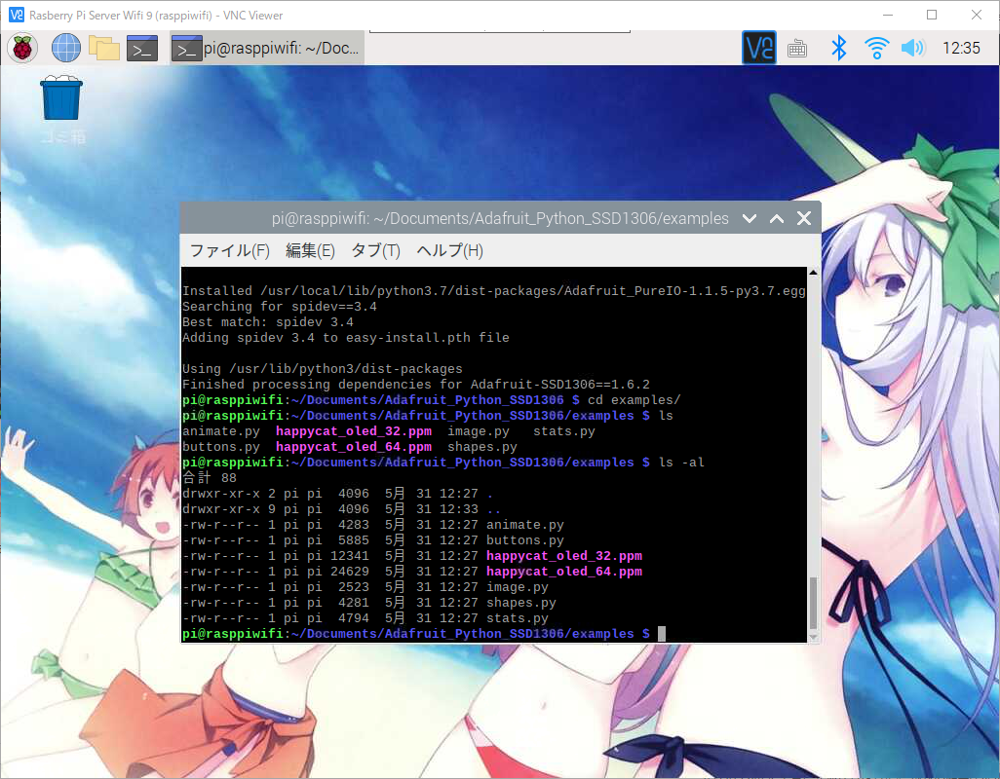
1 | # 샘플폴더를 확인하시면 여러가지 샘플파일이 있는것을 확인 하실수 있습니다. |
이중에 몇가지만 실행을 해보도록 하겠습니다.
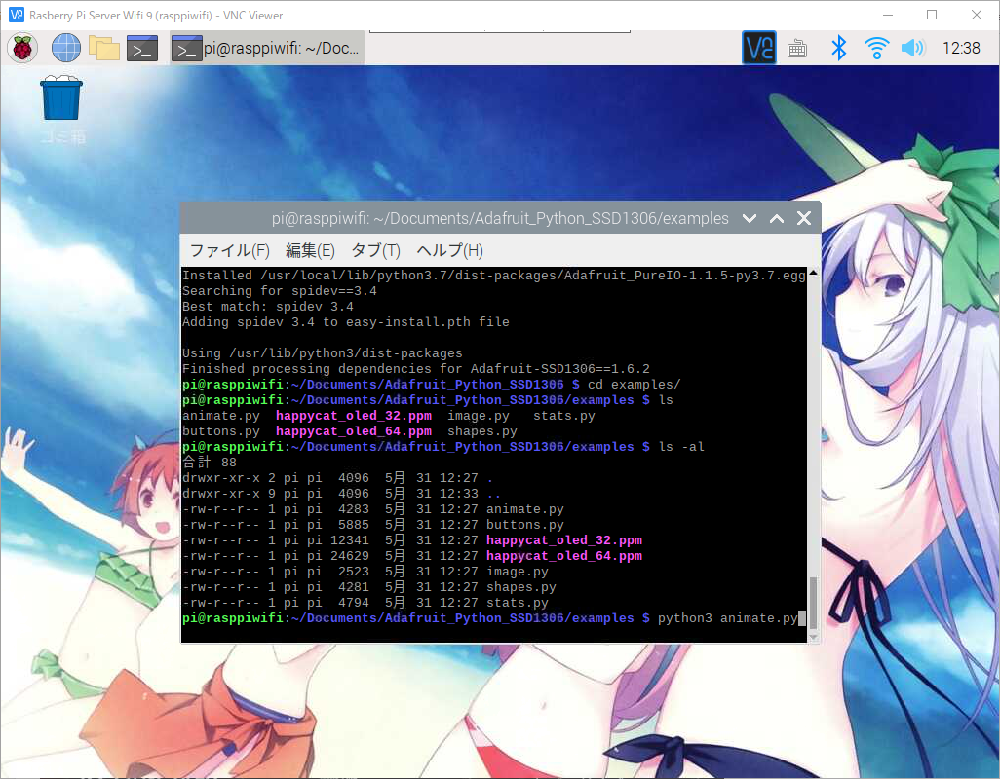
1 | $ python3 animate.py |
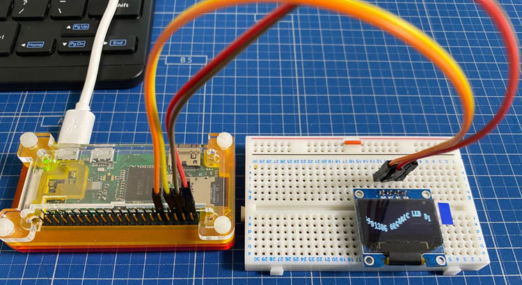
1 | $ python3 image.py |
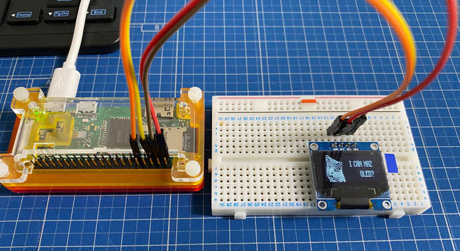
1 | $ python3 stats.py |
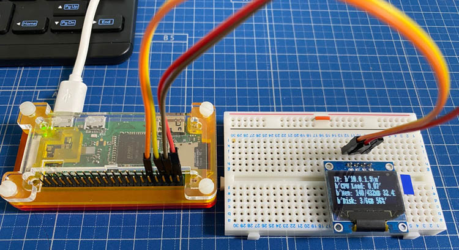